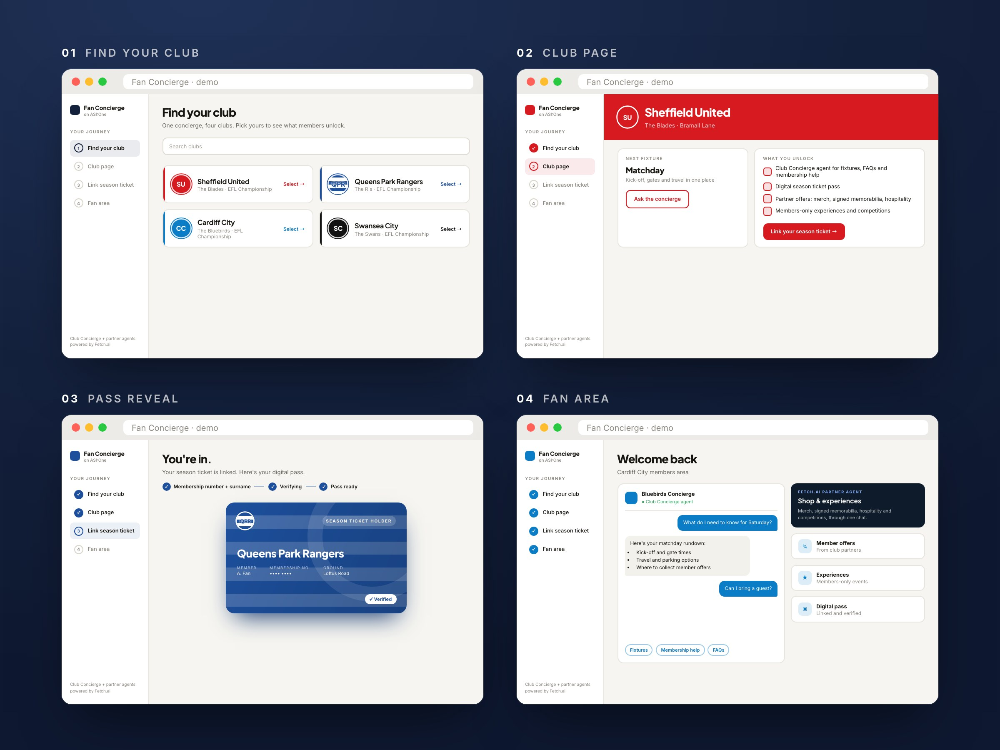
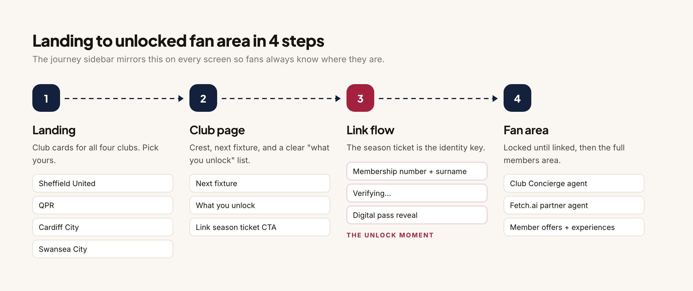
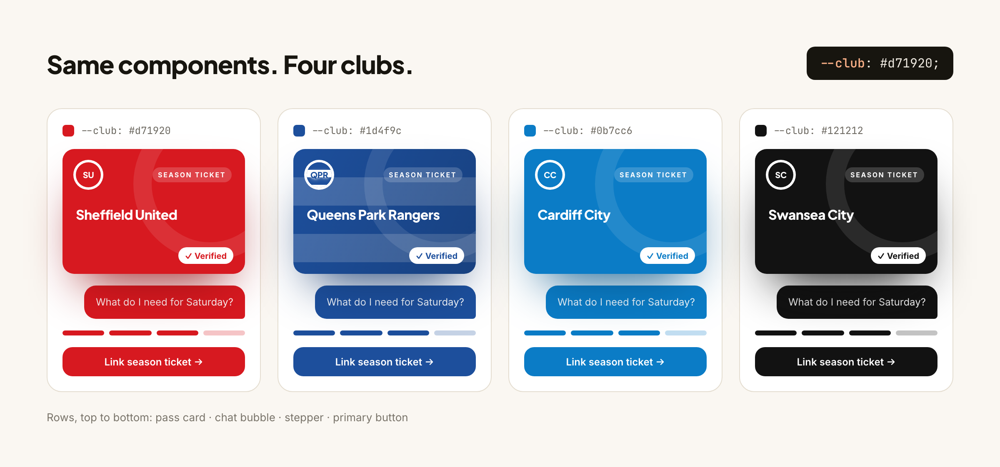
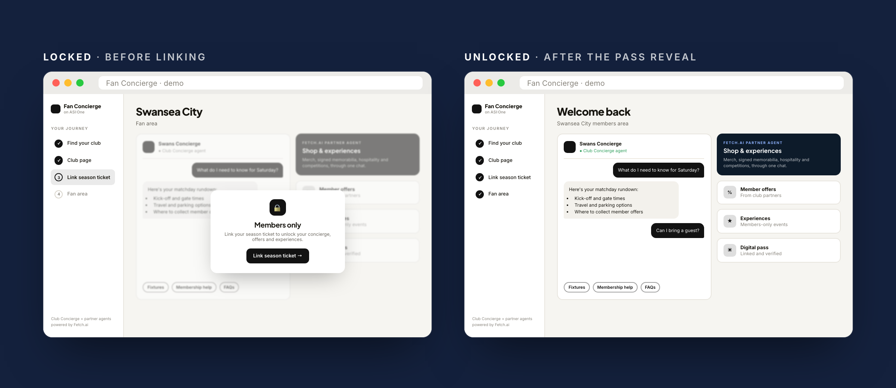

Fan Concierge
One AI concierge, four football clubs. Link your season ticket, unlock a members-only fan area that actually feels like your club.

01 / The Problem
Matchday info lives in five places, and none of them feel like your club.
Fan Concierge is a web app on ASI:One for fans of four EFL Championship clubs: Sheffield United, QPR, Cardiff City, and Swansea City. Fans find their club, link their season ticket, and unlock a members area with AI agents, partner offers, and exclusive experiences.
Today, matchday info is scattered across club apps, ticketing, socials, and travel. Championship clubs have loyal fans but small digital teams, so "build a great app for every club" isn't realistic. And internally, the team needed something concrete to align on design direction before building anything in the production codebase.
Problem statement How do we give Championship fans one place for matchday, membership, and perks that still feels like their club, without each club building its own app?
02 / Research & Findings
Six things that framed the design.
I worked from the PRD and the per-club research doc (fixtures, partners, how membership works at each club). Before drawing any screens, these were the constraints and truths I kept coming back to.
Fans are tribal
A Cardiff fan can't feel like they're in a Swansea app. Neutral design reads as nobody's club.
Buyer and user want different things
Clubs buy it for engagement and partner revenue. Fans use it to get through matchday with less hassle.
The season ticket is the identity key
Fans already have it, clubs already trust it. No new account to explain.
Sponsors fit as agents, not banner ads
A partner you can ask for signed memorabilia is useful. A banner is noise.
Stakeholders needed something clickable
A flow you can click is easier to react to than one described in a doc.
Desktop demo first
The audience was in a meeting room looking at a shared screen, not on a phone in a stadium.
03 / Strategic Insights
4 principles that shaped the design.
- Club identity over neutral designEvery screen should look like it belongs to your club, not to a platform.
- Configuration, not custom codeA new club is colors, crest, and data. Not a new branch.
- Earn the unlockA clear locked vs unlocked state makes membership feel worth having.
- Agents as partners, not adsSponsors show up as helpful agents you choose to talk to.
04 / The Solution
Fan Concierge: four stages, one club accent.
The flow goes landing → club page → link your season ticket → fan area. The link step asks for a membership number and surname, shows a short verifying state, then reveals a digital pass. That reveal is the moment membership becomes real, so the fan area is visibly locked until it happens.



05 / The Outcome
From a demo in a meeting room to a deployed product.
The demo didn't stay a demo. It went up the chain, out to the clubs, through a few rounds of changes, and shipped.
Reviewed by the Chief Revenue Officer
The clickable demo got the product in front of leadership early, while it was still cheap to change.
Presented to the clubs
We took it to the fan clubs themselves, then iterated on what they pushed back on.
Deployed
After 5 to 6 rounds of iteration with the tech team, product, and leadership, the version that survived is the one that shipped.
*Projections, not reported results. Assumes ~22k average Championship home crowd (2024/25 season), about 55k season ticket holders across the 4 clubs, 15% signing up and spending ~£20 a year through partner agents, plus a £25k to £50k annual license per club. Market figure from Global Market Insights.
It also bridged a gap between engineering and product, and partner and stakeholder interest grew with it. That included a celebrity moment: Snoop Dogg, a Swansea City co-owner, featured in the ad for our collaboration with the clubs.
Reflection
Product thinking was the multiplier.
As product and engineering lead, a lot of my job was being the bridge. Engineering wanted to know exactly what to build. The business side wanted to know why clubs would pay for it. Holding both conversations at once is what kept the project moving without drifting.
Building the clickable demo myself was the fastest way to make that happen. It's a lot easier to react to a screen than to a paragraph, and it gave the Chief Revenue Officer and the clubs something real to push on.
We ran one-week sprints, which is fast. Each week ended in a review, so feedback from the tech team, product, and leadership landed in the next iteration instead of a someday list. Over 5 to 6 rounds, a lot changed.
The biggest push came from our founder and tech lead, who was firm that everything had to be built from reusable code blocks. That reshaped the UI: instead of designing fresh screens, I had to make the fan experience feel right using features and components that already existed. It made me a better product person, because the constraint forced every screen to earn its place.